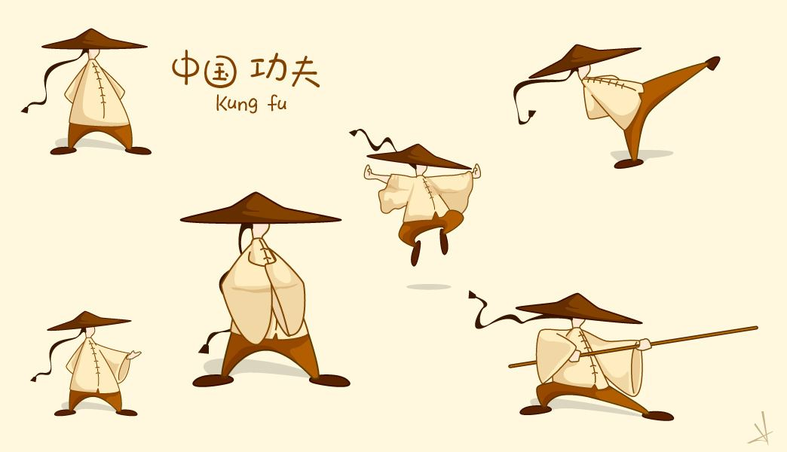

The influence of Chinese culture, from ancient times to modern times, is a model to be learned. In ancient times, neighboring countries sent emissaries to study Chinese culture, showing the far-reaching influence of Chinese literature.



Japan
Culturally, the qing dynasty greatly changed Chinese culture and image.
For example, foreigners' stereotype of China is the tang costume, qipao and other qipao costume (originally evolved from the manchu riding horse coat).
And the qing dynasty men shave the head to keep the braid is different from the previous central plains dynasty men hair and crown.
Chinese tea culture was brought back to Japan by Japanese monk rongxi from the song dynasty and planted all over Japan.
Thus tea culture developed in Japan; The sound of Musical Instruments changed from the original elegant and quiet to festive and lively. Before, guzheng was often used.
Pipa and other ethnic orchestral instruments, to the qing dynasty, the use of suona, drums and instruments such as the sound of loud blowing, percussion instruments;
The same architectural style also changed dramatically. The original cornices became more warped, the eaves became more inward, the tortuosity increased and the straightness shortened.
From the original natural freehand style to more magnificent; From the original comparison of natural texture and plants to more inclined to carving dragon carving phoenix or historical allusions.
Therefore, the qing dynasty caused great changes in the local traditional hanfu, music and architectural culture, which have been influenced till now. On the contrary, han culture is more reserved in Japan.
For example, the kimono originated from han costume, Japanese samurai dao evolved from tang dao, and Japanese music and architecture retained a large number of Chinese ancient songs and architectural styles (especially in tang dynasty).
South Korea
As one of the four Asian dragons, South Korea enjoys a high degree of modernization.
However, South Korea's modernization is not based on denying and abandoning traditional culture, but on respecting traditional culture.
Modernization on the basis of inheritance and development. People who have been to South Korea are deeply impressed by their patriotism and pride in their national culture.
For example, sungkyunkwan university, the most famous university in South Korea, has its motto. Every February and August, koreans also go to the Confucian temple to offer sacrifices to Confucius in the traditional way.
There are also schools that follow the traditional Confucian teaching methods. The main course taught is the Confucian classic four books and five classics.
There are more than 300 traditional county schools and academies in South Korea that have all but disappeared in China.
The world's first Confucius institute was set up in the south Korean capital at the end of 2004. South Korea also takes the spirit of Confucian culture,
Publicize widely to the whole society through film, TV and media. It can be said that Korea is a successful example of cultivating the nation with Confucian culture.
Many western scholars call it "living fossil of Confucian state" and "typical Confucian state". South Korea did not abandon or deny traditional culture,
Instead, it integrates traditional culture into modern society and modern life.
Singapore
In the 1980s, Singapore began to promote the "cultural regeneration" movement centering on the traditional Chinese Confucian culture.
In the Spring Festival in 1982, prime minister lee kuan yew called on the people of Singapore to maintain and carry forward the traditional morality of Chinese Confucianism.
It also regards "loyalty, benevolence, benevolence, benevolence, benevolence, morality, righteousness and integrity" as the "way of governing the country" that the government must resolutely implement.
In October 1988, first deputy prime minister goh chok tong proposed to elevate the Confucian Oriental values into a national consciousness.
And make it a guide for every citizen. In February 1990, the Singapore government published the white paper on common values, which was full of Confucian ethical spirit.
The book proposes five common values :1. 2. Family is the root and society is the foundation;
3. Care and support and help each other; 4. Seek common ground while reserving differences and negotiate consensus; 5. Ethnic harmony and religious tolerance.

Chinese culture is based on the Chinese civilization, which fully integrates the cultural elements of various regions and nations

China has a broad and profound differentiation, covering all kinds of things: qin qi, calligraphy and painting, li yue and imperial books...